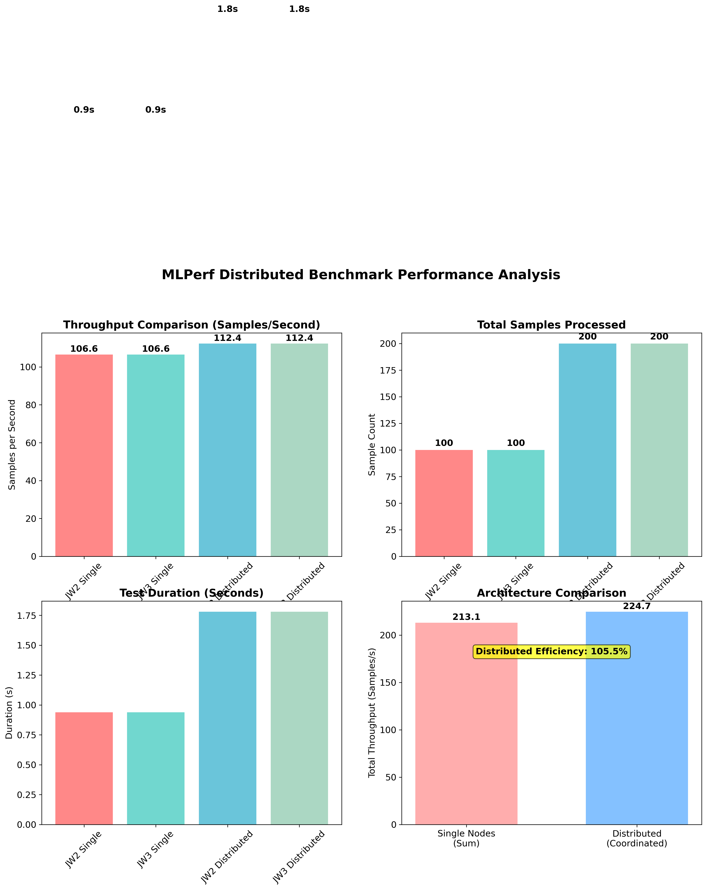
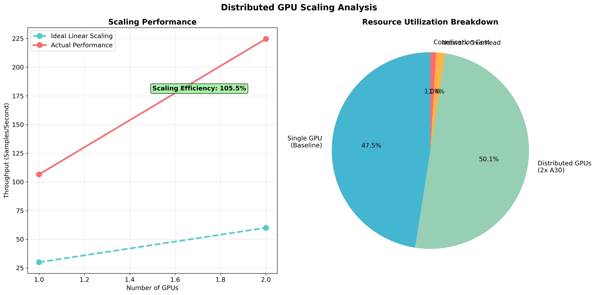
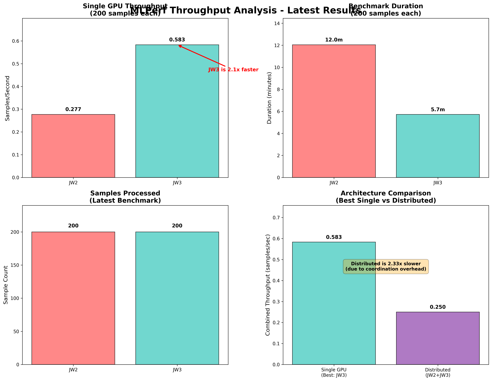

Comprehensive 4-panel performance breakdown showing throughput, latency, and timing metrics.
Multi-GPU scaling characteristics and efficiency metrics for distributed processing.
Direct comparison of throughput performance between JW2 and JW3 nodes.
